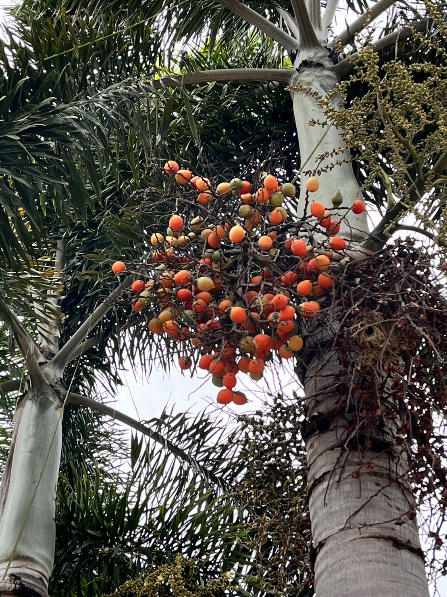
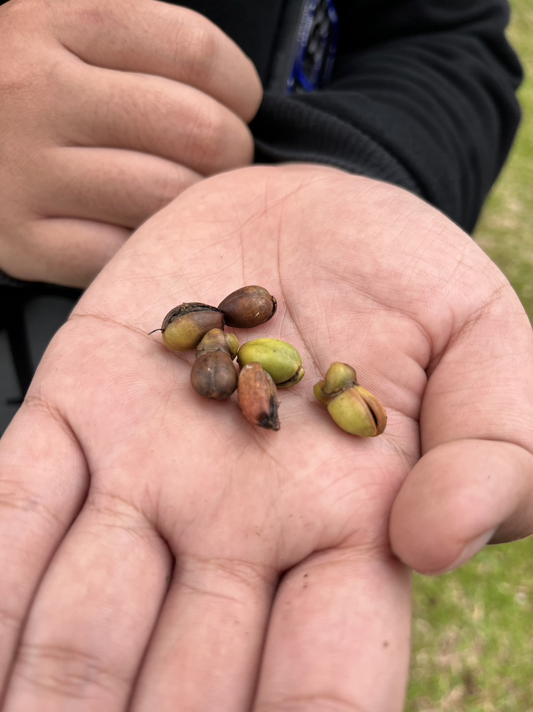
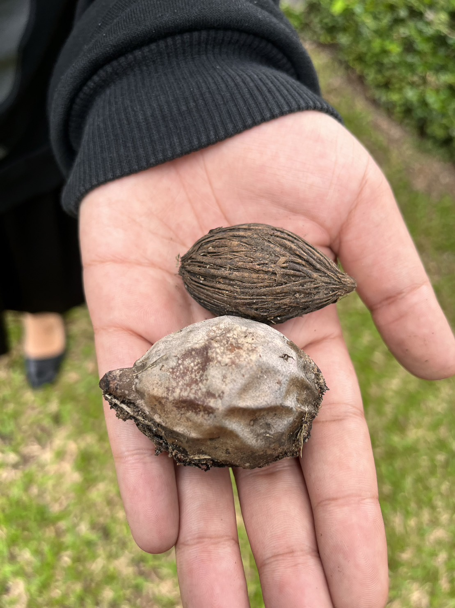
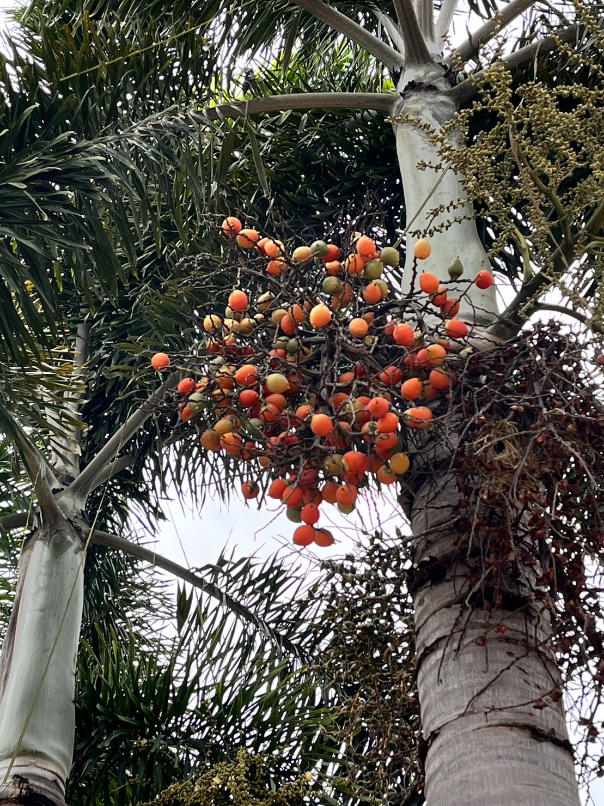
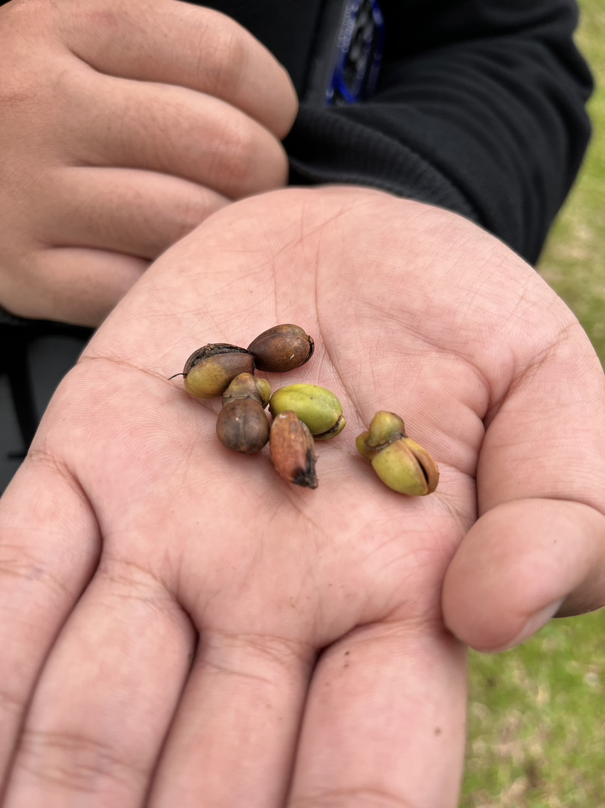
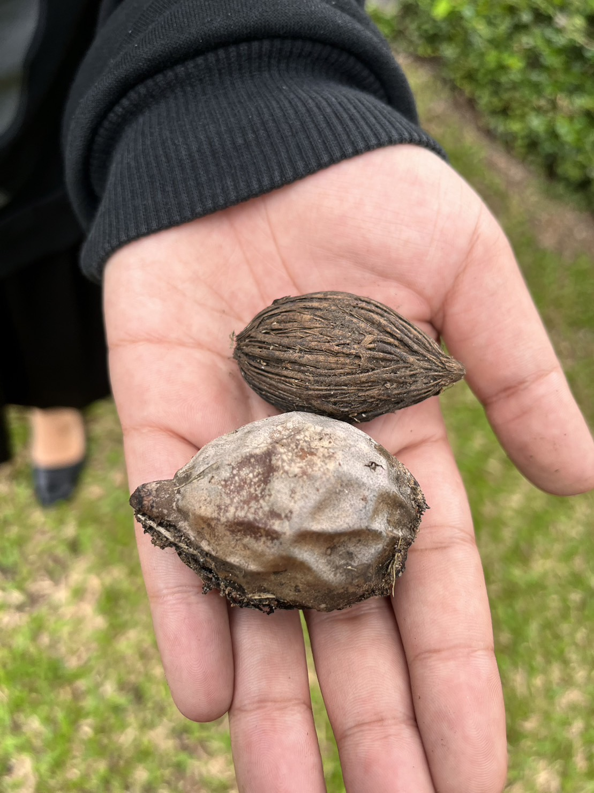

:ลักษณะของต้นหมาก
ต้นหมาก มีถิ่นกำเนิดในทวีปเอเชียเขตร้อน จัดเป็นไม้ยืนต้นจำพวกปาล์ม มีความสูงของต้นประมาณ 10-15 เมตร ลำต้นตั้งตรง เป็นต้นเดี่ยวไม่แตกกิ่งก้าน ลักษณะของลำต้นเป็นรูปทรงกระบอก มีขนาดเส้นผ่านศูนย์กลาง 8-12 เซนติเมตร เปลือกลำต้นเป็นรอยขวั้นรอบ ๆ ขึ้นไปตลอดลำต้น ในระยะแรกจะเจริญเติบโตด้านกว้างและด้านสูง แต่หลังจากหยุดการเจริญเติบโตจะเจริญเติบโตด้านความสูง ต้นหมากมีตายอดส่วนปลายสุดของลำต้น ถ้ายอดตายหมากจะตาย ตายอดจะเป็นที่เกิดของใบหลังจากใบร่วงหล่นจะทิ้งรอยติดของใบไว้ เรียกว่าข้อ ข้อของต้นหมากสามารถคำนวณหาอายุหมากได้ 1 ปี โดยหมากจะมีใบหรือข้อเพิ่มขึ้น 5 ใบ หรือ 5 ข้อ ต้นหมากจะมีเนื้อเป็นเสี้ยนยาวจับตัวกันแน่นบริเวณเปลือกนอกลึกเข้าไปประมาณ 2 เซนติเมตร แต่ส่วนกลางของลำต้นเป็นเสี้ยนไม่อัดแน่น และมีเนื้อไม้อ่อนนุ่มคล้ายกับฟองน้ำ จึงทำให้ต้นหมากเหนียวและสามารถโยกเอนได้มาก ขยายพันธุ์ด้วยวิธีการเพาะเมล็ด เจริญเติบโตได้ดีที่ระดับความสูงจากระดับน้ำทะเลสูงกว่า 700 เมตร
ใบหมาก ใบเป็นใบประกอบแบบขนนก ออกเรียงเวียนหนาแน่นที่ปลายยอด ก้านใบรวมยาวได้ประมาณ 130-200 เซนติเมตร ลักษณะของใบย่อยรูปใบหอก ปลายใบแหลม โคนใบเรียวแคบ ใบอ่อนมีรอยแยก ใบมีขนาดกว้างประมาณ 2.5-6 เซนติเมตร และยาวประมาณ 50-70 เซนติเมตร แผ่นใบเรียบหนา กาบใบหุ้มลำต้น
ดอกหมาก (จั่นหมาก) โดยจะออกตามซอกโคนก้านใบหรือกาบนอก ดอกออกรวมกันเป็นช่อขนาดใหญ่ประกอบไปด้วยโคนจั่นยึดติดอยู่ที่ข้อของลำต้น ก้านช่อดอกเป็นเส้นยาวแตกออกโดยรอบแกนกลาง มีกลีบหุ้มช่อขนาดใหญ่ยาวประมาณ 40 เซนติเมตร เป็นมันเงา มีใบประดับหุ้มอยู่ ดอกเป็นแบบแยกเพศอยู่บนต้นเดียวกัน กลีบดอกเป็นสีขาวแกมสีเหลืองมี 6 กลีบ เรียงเป็นชั้น 2 ชั้น สีเขียว ยาวประมาณ 5-6 มิลลิเมตร ดอกมีเกสรเพศผู้ 6 อัน มีเกสรเพศเมียเป็นเส้น 3 เส้นบาง ๆ แผ่ออก ดอกเพศผู้จะมีขนาดเล็กและอยู่ตรงส่วนปลายของก้านช่อดอก ส่วนดอกเพศเมียจะค่อนข้างใหญ่และอยู่ที่โคนก้านช่อดอก ดอกเพศผู้จะใช้เวลาประมาณ 21 วัน หลังจากนั้น 5 วัน ดอกเพศเมียจะเริ่มบาน
ผลหมาก ผลออกเป็นทะลาย ลักษณะของผลเป็นรูปทรงกลม รูปกลมรี รูปไข่ รูปไข่ปลายแหลม หรือเป็นรูปกระสวยขนาดเล็ก โดยเฉลี่ยแล้วผลที่รวกมันเป็นทะลาย ในหนึ่งทะลายจะมีผลอยู่ประมาณ 10-150 ผล ผิวผลเรียบ มีกลีบเลี้ยงติดเป็นขั้วผล ผลมีขนาดกว้างประมาณ 5 เซนติเมตร และยาวประมาณ 7 เซนติเมตร ผลดิบหรือผลสดเปลือกผลจะเป็นสีเขียวเข้ม เรียกว่า “หมากดิบ” ผลเมื่อแก่เปลือกผลจะเปลี่ยนเป็นสีเหลืองส้มทั้งผลหรือสีแดงแกมส้ม เรียกว่า “หมากสุก” หรือ “หมากสง” ผลประกอบไปด้วย 4 ส่วน คือ เปลือกชั้นนอก (ส่วนของเปลือกที่เป็นเยื่อบาง ๆ สีเขียว เนื้อเปลือกมีเส้นใยละเอียดเหนียว), เปลือกชั้นกลาง (เป็นเส้นใยหนามากมองเห็นชัด), เปลือกชั้นใน (เป็นเยื่อบาง ๆ ละเอียดติดอยู่กับเนื้อหมาก), และส่วนของเมล็ดหรือเนื้อหมาก เมื่ออ่อนจะนิ่ม เนื้อส่วนผิวจะมีลายเส้นสีเหลืองถึงสีน้ำตาล ส่วนเนื้อจะเป็นสีเหลืองอ่อน ๆ ถึงสีเหลืองเข้มอมแดง ภายในผลมีเมล็ดเดียว มักออกผลในช่วงเดือนพฤษภาคม
   
  